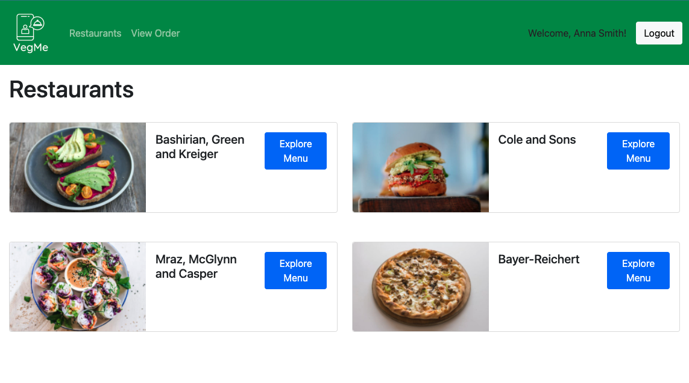

VegMe Marketplace App

This is a 2-sided marketplace built with Ruby on Rails, MVC framework, and PostgreSQL as part of Coder Academy 2nd term assignment.
Its purpose came from the business opportunity to tap into the growing market of vegan consumers, by offering them a unique and trustworthy place for find restaurants offering plant-based meals for delivery.
The main features here include:
- User authentication using Devise
- User authorisation using Rolify and Pundit
- Image handling with Cloudinary
- Access to restaurant users to add, edit and delete items
- Shopping cart
- Payment gateway (Stripe)
Please check out the repo and its full documentation on GitHub